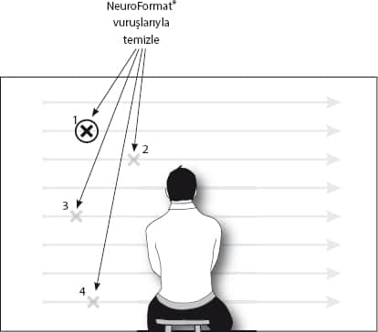

İlk kitabımı okuyanlar vuruş tekniğinden EFT olarak bahsettiğimi hatırlayacaklar. Aslında, bu tekniğin orijinali 80’li yıllarda Roger Callahan isimli Amerikalı bir psikoterapist tarafından şans eseri bulunmuş ve adına Thought Field Therapy (TFT) denmiş. EFT’yse Roger Callahan’ın öğrencilerinden biri olan Gary Craig’in TFT’yi yeniden düzenlemesiyle ortaya çıkmış. Ancak, dünya genelinde çeşitli sebeplerden dolayı EFT yani TFT’nin “çakması” ünlü olmuş.
Açıkçası, ben çalışmalarımda ne TFT ne de EFT’yi olduğu gibi kullanıyorum. Benim kullanma şeklim hem daha basit, hem de çok daha hızlı sonuç veriyor. Sizinle birazdan paylaşacağım bu uygulamadan kitap boyunca “NeuroFormat® Vuruşları” olarak bahsedeceğim.
Çoğu zaman, göz pozisyonlarında bulduğumuz negatif duyguyu temizlemekte kullanacağımız bu tekniği yer yer, özellikle hayvan fobilerinde göz pozisyonlarına gerek olmadan da uygulayacağız. Şimdi detaylara geçelim.
Bu tekniği göz noktaları olmadan da kullanabilirsiniz
Aslında bu vuruş tekniğini uygulamak için göz noktalarını taramak bir zorunluluk değil. Bu yüzden eğer göz pozisyonlarını yakalayamıyor ya da farklı bir nedenden yapamıyorsanız da bu dünyanın sonu değil. Bu vuruşlardan sonuç almamanız imkânsız.
Burada vuruşlarla yaptığımız, vücutta herhangi bir sebeple hissedilen olumsuz duygunun “deşarj” edilmesi. Göz noktalarını taramadan böyle bir duygu hissederseniz de NeuroFormat® Vuruşlarını uygulayın.
Biz bu vuruşları göz pozisyonlarında uygulayarak, göz pozisyonlarında bulduğumuz olumsuz duyguları daha hızlı deşarj etmeyi sağlıyoruz.
Evet, bu vuruşları yapmak için göz taramasına ihtiyacınız yok. Olumsuz duyguları OLUMSUZ ifadelerle tetikledikten sonra (göz pozisyonlarını hiç taramadan) bu vuruşları yaparak, hissettiğiniz olumsuz duyguyu temizleyebilirsiniz.
Yine de eklemek isterim ki, daha hızlı temizlik yapabilmek için bu vuruşları göz pozisyonlarında uygulamak bizim en önemli silahımız. Zira kendi tecrübemden, tüm göz pozisyonlarını tarayarak vuruşları yapmanın, göz pozisyonlarını kullanmamaktan onlarca kat daha hızlı sonuç verdiğini söyleyebilirim.
Özellikle tek bir spesifik olay üzerinde çalışmadığımız, genel algıyı değiştirdiğimiz ya da hayat boyunca birikmiş duyguları temizlediğimiz durumlarda göz pozisyonlarının hızı ve etkisi “paha biçilmez”.
